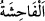

LÛT’U DA
KAVMİNE GÖNDERDİK
54. Lût’u da (peygamber olarak kavmine gönderdik.) Kavmine şöyle demişti: Göz
göre göre hâlâ o hayâsızlığı yapacak mısınız?
55. (Bu ilâhî ikazdan sonra hâlâ) siz, ille de kadınları bırakıp şehvetle erkeklere
yaklaşacak mısınız? Doğrusu siz, câhillik edegelen bir kavimsiniz!
56. Kavminin cevabı sadece: “Lût âilesini memleketinizden çıkarın; çünkü onlar
(bizim yaptıklarımızdan) uzak kalmak isteyen insanlarmış!” demelerinden ibaret
oldu.
57. Bunun üzerine onu ve âilesini kurtardık. Yalnız karısı müstesna; onun geride
(azâba uğrayanların içinde) kalmasını takdir ettik.
58. Onların üzerlerine müthiş bir yağmur indirdik. Bu sebeple, uyarılan (fakat
aldırmayan)ların yağmuru ne kötü olmuştur!
“Lût’u da” yâni, Lût b. Hârân’ı peygamber olarak kavmine gönderdik. “Kavmine
şöyle demişti:” Burada kasdedilen Lût (a.s.)’ın peygamber olarak gönderilişi ve kavmi
ile arasında sözlü ve fiilî münakaşaların gerçekleştiği uzunca bir zamandır. Yani, Lût
(a.s.)’ın kavminin işlediği fiilleri kötü görerek ve reddederek onlara şöyle dediği
zamanı zikret.
“Göz göre göre hâlâ o hayâsızlığı yapacak mısınız?”
“
” fiil ve sözlerden çok çirkin olanlara denir. Burada kasdedilen livâta ve arka
mahalden cinsî münâsebettir.
Buradaki görme, kalbin görmesidir ki ilim/bilmek anlamınadır. Çünkü kalbin
müdrike/anlama kuvvetine “basîret ve basar” denir. Uzuv olan göz için ise neredeyse
“basîret” kelimesi hiç kullanılmaz. Bunun aksine veya kalbinin basîret kuvveti olduğu
için kör olan kimseye “
(gören)” denir.
Yâni kesin bir bilgi ile çirkinliğini bildiğiniz halde siz çirkinlikte ve hayâsızlıkta en
aşırı bir fiili mi yapıyorsunuz? Bu fiilin çirkin ve hayâsızlık olduğunu bilen bir kimsenin